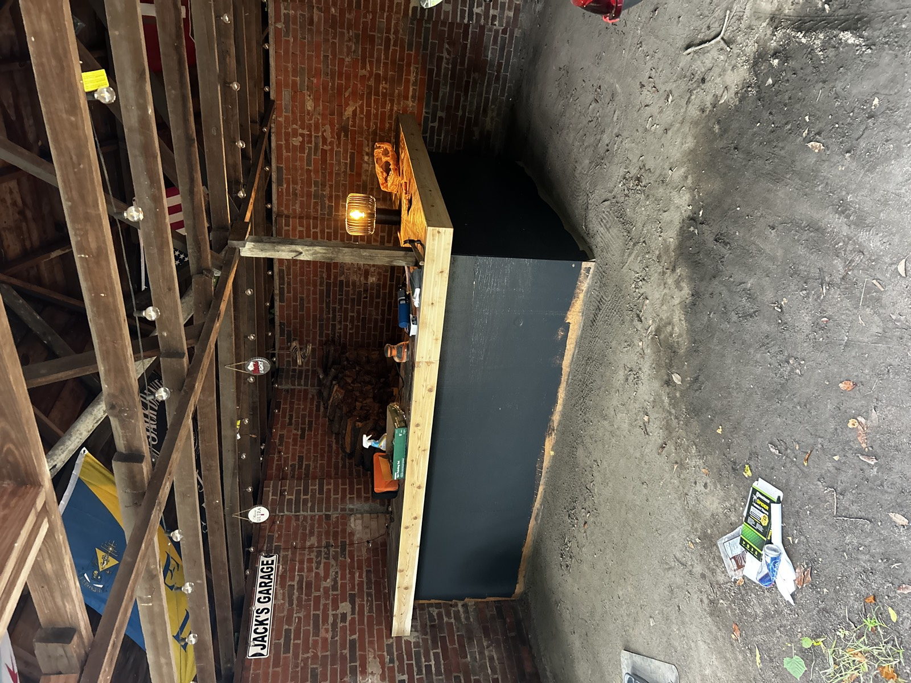

Outdoor Bar
Built and refinished a custom outdoor bar, including structural framing, surface prep, and final paintwork. Project involved restoring worn materials, ensuring stability, and delivering a clean, weather-resistant finish suitable for outdoor use.